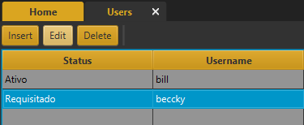

Autorizando Acessos
Quando um usuário requisita o acesso no sistema, ele não obtem acesso imediato. Ao tentar logar, ele vê esta
mensagem:
Para autorizar o acesso do novo usuário, no menu principal clique em "Usuários":
Selecione o usuário e clique em "Editar".

Mude a situação do usuário para "Ativo" e atribua-o a um perfil.
Clique em "Salvar" e confirme as alterações.
Agora o novo usuário pode acessar o sistema.